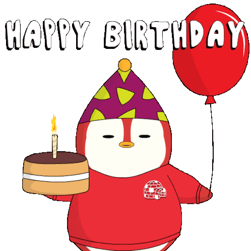

Hi bae, as of now I'm still writing the content of this message and probably not yet done doing this code before isend sayo, sorry for making you wait this long. Bear with me, hindi talaga ako muna nagreply sa recent messages mo just for the sake na tapusin 'to. Katakot lang kasi baka isipin mo hindi lang birthday mo pinalagpas ko pati na rin monthsary natin :/
I ran out of ideas, ito na lang talaga naisip ko and i don't know if you'll ever open this kapag sinend ko na sa'yo later but yep. Its the second month already through those up and downs pero we've still managed to fix it kahit minsan hindi mo nakikita sa'kin 'yung willingness na makipag-ayos and I'm very thankful for that. Everytime na cocomfront mo ako kahit ang sama na minsan ng replies ko gano'n pa rin nagtitiyaga kang pakisamahan ugali ko. Dunno ano nakita mo sa'kin bakit nagtitiyaga ka ang alam ko lang eh thankful ako sobra kasi kahit ilang reason na binigay ko sa'yo na sumuko ka or what nagstay ka pa rin. Pero ngayon naman I think I'll start doing what I've done noon since sabi mo ganoong ako 'yung gusto mo so syempre para hindi mo na ako bungangaan edi susunod na nga, malay ko humingi ka na naman ng space tapos ilang araw ka mawala edi kawawa naman ako? Kidding aside, ayoko na masyado madrama 'to ginawa ko lang talaga to para sa greetings mo and sa 2nd month natin dahil sa pagtitiyaga mo sa'kin.
Happy Birthday and also happy monthsary, bae.

|